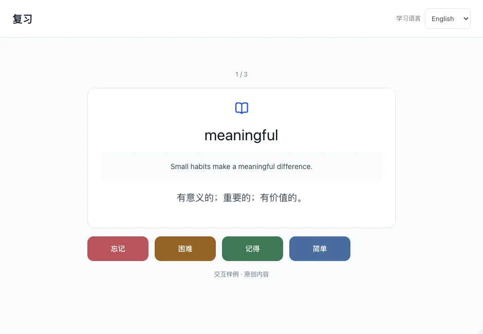
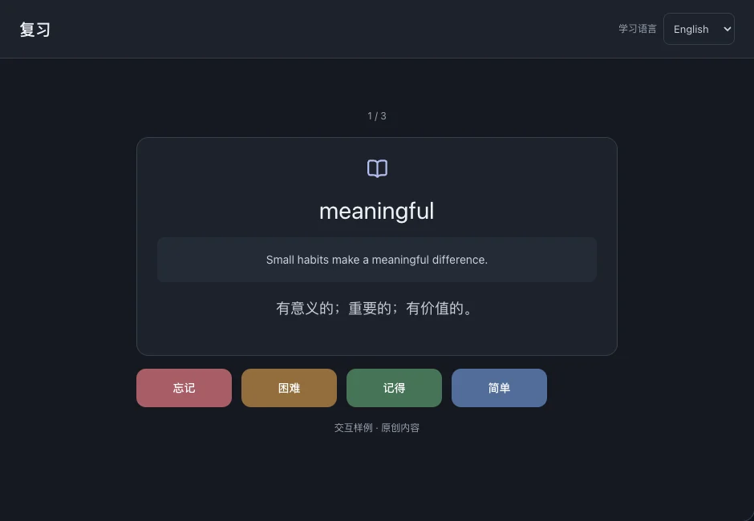

复习
结合原句回忆单词或词组，再按记忆程度评分。应用据此安排下次复习。
本页目录
完成一次复习
- 进入“复习”，先看当前卡片，尝试回忆含义。
- 显示答案，与自己的回忆对照。
- 选择评分，进入下一张；本次评分会写入复习记录。



如何选择评分
忘记：没想起来。困难：勉强想起来。记得：正确回忆。简单：迅速且有把握地想起来。
显示的下次复习时间取决于该卡片的历史与本次评分，不是固定间隔，也不是推送通知。
抽查高频已知词
启用高频词起步后，复习可包含对这些已知词的抽查。高频词目前支持英语与中文。
相关操作高频词起步